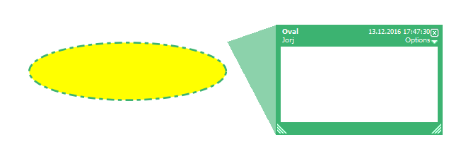
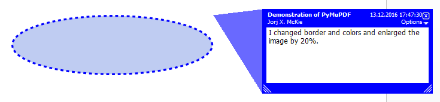

Annot¶
Quote from the Adobe manual: "An annotation associates an object such as a note, sound, or movie with a location on a page of a PDF document, or provides a way to interact with the user by means of the mouse and keyboard."
This class supports accessing such annotations - not only for PDF files, but for all MuPDF supported document types. However, only a few methods and properties apply to non-PDF documents.
| Attribute | Short Description |
|---|---|
Annot.getPixmap() |
image of the annotation as a pixmap |
Annot.setInfo() |
PDF only: change metadata of an annotation |
Annot.setBorder() |
PDF only: changes the border of an annotation |
Annot.setLineEnds() |
PDF only: changes the line ends of an annotation |
Annot.setFlags() |
PDF only: changes the flags of an annotation |
Annot.setRect() |
PDF only: changes the rectangle of an annotation |
Annot.setColors() |
PDF only: changes the colors of an annotation |
Annot.updateImage() |
PDF only: applies border and color values to shown image |
Annot.border |
PDF only: border details |
Annot.colors |
PDF only: border / background and fill colors |
Annot.flags |
PDF only: annotation flags |
Annot.info |
PDF only: various information |
Annot.lineEnds |
PDF only: start / end appearance of line-type annotations |
Annot.next |
link to the next annotation |
Annot.parent |
page object of the annotation |
Annot.rect |
rectangle containing the annotation |
Annot.type |
PDF only: type of the annotation |
Annot.vertices |
PDF only: point coordinates of Polygons, PolyLines, etc. |
Class API
-
class
Annot¶ -
getPixmap(matrix = fitz.Ientity, colorspace = fitz.csRGB, alpha = False)¶ Creates a pixmap from the annotation as it appears on the page in untransformed coordinates. The pixmap's IRect equals
Annot.rect.round()(see below).Parameters: - matrix (Matrix) -- a matrix to be used for image creation. Default is the
fitz.Identitymatrix. - colorspace (Colorspace) -- a colorspace to be used for image creation. Default is
fitz.csRGB. - alpha (bool) -- whether to include transparency information. Default is
False.
Return type: - matrix (Matrix) -- a matrix to be used for image creation. Default is the
-
setInfo(d)¶ Changes the info dictionary. This is includes dates, contents, subject and author (title). Changes for
namewill be ignored.Parameters: d (dict) -- a dictionary compatible with the infoproperty (see below). Plausibility checks are kept to a minimum - except all entries must beunicode,bytes, or strings. Ifbytesvalues are provided in Python 3, they will be treated as being UTF8 encoded.
-
setLineEnds(start, end)¶ Changes the line ending styles (of annotation types where this makes sense).
Parameters: - start (int) -- an integer specifying the line start style. See Annotation Line End Styles for acceptable values.
- end (int) -- an integer specifying the line end style. See Annotation Line End Styles for acceptable values.
-
setRect(rect)¶ Changes the rectangle of an annotation. The annotation can be moved around and both sides of the rectangle can be independently scaled. However, the annotation appearance will never get rotated, flipped or sheared.
Parameters: rect (Rect) -- the new rectangle of the annotation. This could e.g. be a rectangle rect = Annot.rect * Mwith a suitable Matrix M (only scaling and translating will yield the expected effect).
-
setBorder(value)¶ PDF only: Change border width and dashing properties. Any other border properties will be deleted.
Parameters: value (number or dictionary) -- a number or a dictionary specifying the desired border properties. If a dictionary is provided, it must be of a format as explained for property annot.border. If a number is specified or a dictionary like{"width": w}, only border width will be changed and any dashes will remain unchanged. Conversely, with a dictionary{"dashes": [...]}, only line dashing will be changed. To remove dashing and get a straight line, specify an empty list[].
-
setFlags(flags)¶ Changes the flags of the annotation. See Annotation Flags for possible values and use the
|operator to combine several.Parameters: flags (int) -- an integer specifying the required flags.
-
setColors(d)¶ Changes the colors associated with the annotation.
Parameters: d (dict) -- a dictionary containing color specifications. For accepted dictionary keys and values see below. The most practical way should be to first make a copy of the colorsproperty and then modify this dictionary as required.
-
updateImage()¶ Attempts to modify the displayed graphical image such that it coincides with the values currently contained in the
borderandcolorsproperties. This is achieved by modifying the contents stream of the associated appearanceXObject. If this stream contains unsupported commands (like nested invocations of yet anotherXObject), aValueErrorexception is raised.
-
next¶ The next annotation on this page or
None.Return type: Annot
-
type¶ Meaningful for PDF only: A number and one or two strings describing the annotation type, like
[2, 'FreeText', 'FreeTextCallout']. The second string entry is optional and may be empty.[]if not PDF. See the appendix Annotation Types for a list of possible values and their meanings.Return type: list
-
info¶ Meaningful for PDF only: A dictionary containing various information. All fields are unicode or strings (Python 2 or Python 3 respectively).
name- e.g. for[12, 'Stamp']type annotations it will contain the stamp text likeSoldorExperimental.content- a string containing the text for typeTextandFreeTextannotations. ForFileAttachmentit contains the filename. For other types the entry is optional. Empty if not specified or not a PDF.title- a string containing the title of the annotation pop-up window. By convention, this is used for the annotation author.creationDate- the PDF timestamp of creation.modDate- the PDF timestamp of last change.subject- the subject, an optional string.
Return type: dict
-
flags¶ Meaningful for PDF only: An integer whose low order bits contain flags for how the annotation should be presented. See section Annotation Flags for details.
Return type: int
-
lineEnds¶ Meaningful for PDF only: A dictionary specifying the starting and the ending appearance of annotations of types
Line,PolyLine, among others. An example would be{'start': 'None', 'end': 'OpenArrow'}.{}if not specified or not applicable. For possible values and descriptions in this list, see the Adobe manual, table 8.27 on page 630.Return type: dict
-
vertices¶ Meaningful for PDF only: A list containing point ("vertices") coordinates for various types of annotations: For "Line" it contains the starting and ending coordinates. For
[2, 'FreeText', 'FreeTextCallout']it contains 4 or 6 floats designating the starting, the (optional) knee point, and the ending coordinates. For "PolyLine" and "Polygon" it contains the coordinates of the edges connected by line pieces. For "Ink" (freehand drawing) it contains one to many lists of vertex coordinates. Each such sublist represents a separate line in the drawing.[]when not applicable.Return type: list
-
colors¶ Meaningful for PDF only: A dictionary of two lists of floats in range
0 <= float <= 1specifying the common (common) and the interior (fill) colors. The common color is used for borders, and in some cases also for backgrounds. The fill color is used for the interior of objects like line ends, circles and squares. The lengths of the lists determine the colorspaces used: 1 = GRAY, 3 = RGB, 4 = CMYK. So[1.0, 0.0, 0.0]stands for RGB and colorred. Both lists can be[]if not specified. The dictionary will be empty{}if no PDF. The value of each float stands for the "intensity" of the represented color byte, meaning 1 corresonds to 255, 0.5 to 128, 0.25 to 64 and so forth.Return type: dict
-
border¶ Meaningful for PDF only: A dictionary containing border characteristics. It will be empty
{}if not PDF or when no border information is provided. Technically, the PDF entries/Border,/BSand/BEwill be checked to build this information. The following optional keys may be contained:width- a float indicating the border thickness in points.effect- a list specifying a border line effect like[1, 'C']. The first entry "intensity" is an integer (from 0 to 2 for maximum intensity). The second is either 'S' for "no effect" or 'C' for a "cloudy" line.dashes- a list of up to 4 integer entries specifying a line dash pattern like in[3, 2]. This example specifies 3-point dashes alternating with 2-point gaps. See the Adobemanual page 217 for details.style- 1-byte border style:S(Solid) = solid rectangle surrounding the annotation,D(Dashed) = dashed rectangle surrounding the annotation, the dash pattern is specified by thedashesentry,B(Beveled) = a simulated embossed rectangle that appears to be raised above the surface of the page,I(Inset) = a simulated engraved rectangle that appears to be recessed below the surface of the page,U(Underline) = a single line along the bottom of the annotation rectangle.hradius- horizontal corner radius. Zero means square (un-rounded) corners.vradius- vertical coner radius. Zero means square (un-rounded) corners.
Return type: dict
-
Example¶
Change the graphical image of an annotation. Also update the "author" and the text to be shown in the popup window:
doc = fitz.open("circle-in.pdf")
page = doc[0] # page 0
annot = page.firstAnnot # get the annotation
annot.setBorder({"dashes": [3]}) # set dashes to "3 on, 3 off ..."
# set border / popup color to blue and fill color to light blue
annot.setColors({"common":[0, 0 ,1], "fill":[0.75, 0.8, 0.95]})
info = annot.info # get info dict
info["title"] = "Jorj X. McKie" # author name in popup title
# text in popup window ...
info["content"] = "I changed border and colors and enlarged the image by 20%."
info["subject"] = "Demonstration of PyMuPDF" # some readers also show this
annot.setInfo(info) # update info dict
r = annot.rect # take annot rect
r.x1 = r.x0 + r.width * 1.2 # new location has same top-left
r.y1 = r.y0 + r.height * 1.2 # but 20% longer sides
annot.setRect(r) # update rectangle
annot.updateImage() # update appearance
doc.save("circle-out.pdf", garbage=4) # save
This is how the circle annotation looks before and after the change:
 